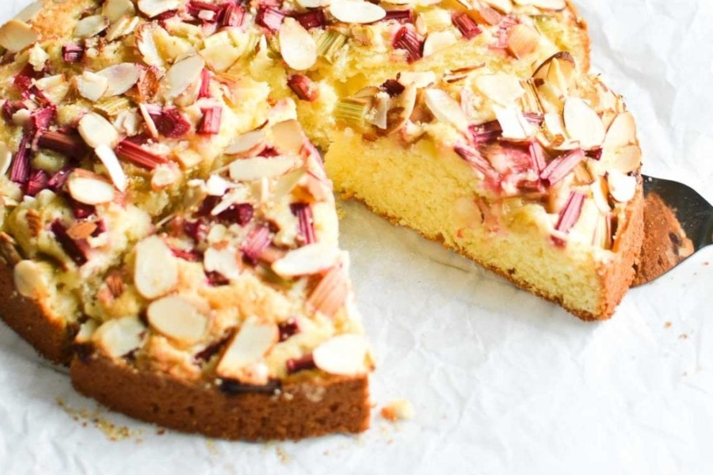

This Norwegian Rhubarb and Almond Cake is a delicate
breakfast cake that features the unusual combination of
tart rhubarb with almond. This is an ideal spring brunch cake.
Prep Time: 15mins
Cook Time: 35mins
Total Time: 50mins
Servings: 10

Ingredients
10 Tbsp (150grams) unsalted butter at room temperature
3/4 cup (150grams) granulated sugar
2 large eggs at room temperature
1 1/2 cups (200 grams) all purpose flour
1 1/2 tsp baking powder
1/2 cup (1dl )whole milk or half and half
1 1/2 tsp almond extract
1 1/2 cups (250 grams) chopped rhubarb or about 3-5 stalks, depending on size.
3 Tbsp raw sugar
3 Tbsp sliced almonds
Steps
Preheat your oven to 350F
Lightly grease an 9 inch springform pan and place a round of parchment paper at the bottom.
Cream the butter and sugar in the bowl of a stand mixer or with electric mixers until light and fluffy. This will take a couple of minutes. Don’t skip this step, the creaming incorporates air into the batter that helps the cake bake up light and fluffy.
Add in the eggs one at a time, beating the mixture between each addition until they are fully incorporated.
Add the flour, baking powder, and then the milk or half and half, along with the almond extract. Mix until combined.
Spread the batter into your prepared pan, making sure it is relatively even.
Scatter the chopped rhubarb over the top of the cake, pressing it in just a little bit.
Scatter the raw sugar and sliced almonds over the cake
Bake for about 30-40 minutes, until set in the middle, and golden brown on top. Let the cake cool for about 10 minutes before carefully unlatching the pan.
Notes:
Buttermilk can be used instead of milk.
Try raspberries or blueberries in place of the rhubarb.
Substitute vanilla extract for the almond extract.